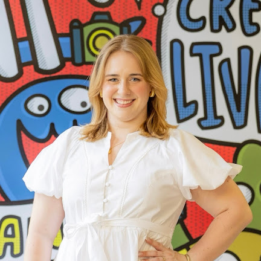

Constance McCants is an award-winning designer, illustrator, and artist based in Columbia, South Carolina.
Constance started out at Chernoff Newman, an integrated communications agency, before returning to her alma mater as a graphic designer in the University of South Carolina's Division of Marketing.
She stays active in Columbia's creative community, serving as Judging Chair for the American Advertising Federation Midlands Chapter and Co-Chair of the Marketing Committee for Columbia Contemporaries. Outside of work, she finds inspiration in her surroundings and spends time with the people she loves at local music and art events.
With both agency and in-house experience, no project is too big, too small, or too weird. Constance is curious, detail-driven, and always up for a new challenge, moving easily between branding, print, digital, and illustration. She believes every brand has a story worth telling, and she's drawn to finding the visual language that tells it best.
Awards
- World Illustration Awards, 2025 Longlist, Site Specific + New Talent, “Welcome to SVAD” More info
- AAF District III: Gold ADDY Award, OOH & Ambient Media, “Welcome to SVAD” More info
- AAF Midlands: Gold ADDY Award, Outdoor & Transit Advertising, Site, “Welcome to SVAD” More info
- 2023 Fl3tch3r Exhibit Student Awards + Student Work Exhibition, “SOAR Airlines”, More info
- Silver ADDY Award, Integrated Brand Identity, Campaign, “SOAR Airlines” More info
Exhibits / Workshops
- Wonder, Gemini Arts, “Nostalgia 2.0,” Group Exhibit
- “Inquiry by Design” and “Poster Making” Workshop, Basel School of Design, University of Applied Sciences and Arts Northwestern Switzerland (FHNW)
- USC School of Visual Art and Design, “McMaster 70th Annual Student Juried Show,” Juried Show
- Wonder, Boyd Innovation Center, “Nostalgia,” Group Exhibit
- Wonder, Boyd Innovation Center, “Eerie,” Group Exhibit
- Good for the Sole, “Pen Pals,” Group Exhibit
- Good for the Sole, “Creations Abroad,” Solo Exhibit
- FemmeX, “USC Italy Honors College Study Abroad,” Group Exhibit
Featured
- Graphic Design + Illustration students shine bright at 2024 AAF Midlands Awards Gala
- USC’s student-run design studio nurtures creativity and industry experience
- The Design Studio
- GD+I Program, Student Experiences, GD+I Club
- World Illustration Awards Winners and Archive
- WIA2025 – Longlist Category Highlights: Site Specific
- USC McCausland School of Arts and Sciences LinkedIn Feature
- Meet the AAF Midlands Board of Directors
Selected clients
- Charlotte Douglas International Airport
- South Carolina Department of Behavioral Health and Developmental Disabilities
- South Carolina Department of Agriculture
- University of South Carolina